JVM原理讲解和调优
一、什么是JVM
JVM是Java Virtual Machine（Java虚拟机）的缩写，JVM是一种用于计算设备的规范，它是一个虚构出来的计算机，是通过在实际的计算机上仿真模拟各种计算机功能来实现的。
Java语言的一个非常重要的特点就是与平台的无关性。而使用Java虚拟机是实现这一特点的关键。一般的高级语言如果要在不同的平台上运行，至少需要编译成不同的目标代码。而引入Java语言虚拟机后，Java语言在不同平台上运行时不需要重新编译。Java语言使用Java虚拟机屏蔽了与具体平台相关的信息，使得Java语言编译程序只需生成在Java虚拟机上运行的目标代码（字节码），就可以在多种平台上不加修改地运行。Java虚拟机在执行字节码时，把字节码解释成具体平台上的机器指令执行。这就是Java的能够“一次编译，到处运行”的原因。
从Java平台的逻辑结构上来看，我们可以从下图来了解JVM： 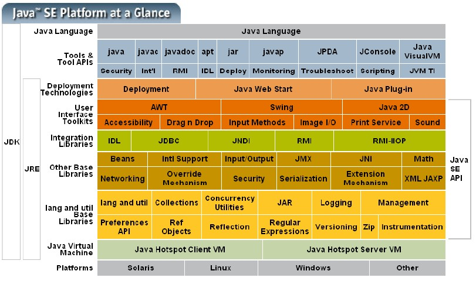 从上图能清晰看到Java平台包含的各个逻辑模块，也能了解到JDK与JRE的区别，对于JVM自身的物理结构，我们可以从下图鸟瞰一下： 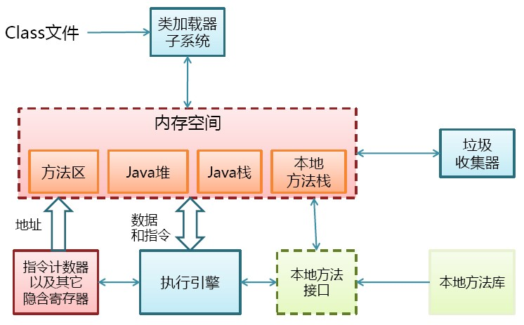
二、JAVA代码编译和执行过程
Java代码编译是由Java源码编译器来完成，流程图如下所示： 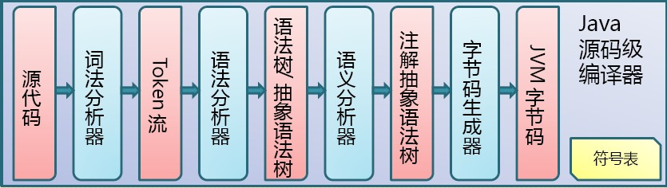 Java字节码的执行是由JVM执行引擎来完成，流程图如下所示： 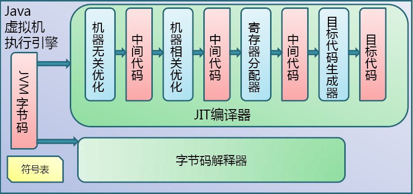 ava代码编译和执行的整个过程包含了以下三个重要的机制：
- Java源码编译机制
- 类加载机制
- 类执行机制
Java源码编译机制
Java 源码编译由以下三个过程组成： - 分析和输入到符号表
- 注解处理
- 语义分析和生成class文件 流程图如下所示： 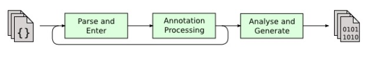 最后生成的class文件由以下部分组成：
- 结构信息。包括class文件格式版本号及各部分的数量与大小的信息
- 元数据。对应于Java源码中声明与常量的信息。包含类/继承的超类/实现的接口的声明信息、域与方法声明信息和常量池
- 方法信息。对应Java源码中语句和表达式对应的信息。包含字节码、异常处理器表、求值栈与局部变量区大小、求值栈的类型记录、调试符号信息
类加载机制
JVM的类加载是通过ClassLoader及其子类来完成的，类的层次关系和加载顺序可以由下图来描述： 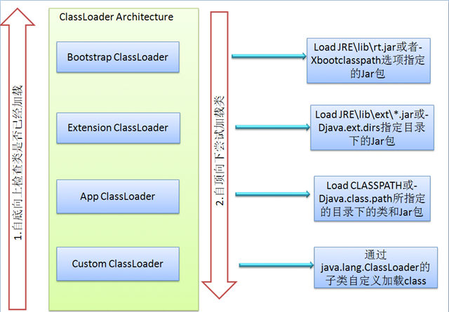1）Bootstrap ClassLoader
负责加载$JAVA_HOME中jre/lib/rt.jar里所有的class，由C++实现，不是ClassLoader子类
2）Extension ClassLoader
负责加载java平台中扩展功能的一些jar包，包括$JAVA_HOME中jre/lib/*.jar或-Djava.ext.dirs指定目录下的jar包
3）App ClassLoader
负责记载classpath中指定的jar包及目录中class
4）Custom ClassLoader
属于应用程序根据自身需要自定义的ClassLoader，如tomcat、jboss都会根据j2ee规范自行实现ClassLoader加载过程中会先检查类是否被已加载，检查顺序是自底向上，从Custom ClassLoader到BootStrap ClassLoader逐层检查，只要某个classloader已加载就视为已加载此类，保证此类只所有ClassLoader加载一次。而加载的顺序是自顶向下，也就是由上层来逐层尝试加载此类。
类执行机制
JVM是基于栈的体系结构来执行class字节码的。线程创建后，都会产生程序计数器（PC）和栈（Stack），程序计数器存放下一条要执行的指令在方法内的偏移量，栈中存放一个个栈帧，每个栈帧对应着每个方法的每次调用，而栈帧又是有局部变量区和操作数栈两部分组成，局部变量区用于存放方法中的局部变量和参数，操作数栈中用于存放方法执行过程中产生的中间结果。栈的结构如下图所示：
三、JVM内存管理和垃圾回收
JVM内存组成结构
JVM栈由堆、栈、本地方法栈、方法区等部分组成，结构图如下所示： 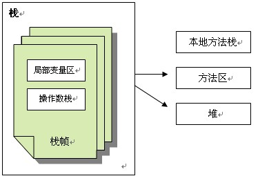
1）堆
所有通过new创建的对象的内存都在堆中分配，堆的大小可以通过-Xmx和-Xms来控制。堆被划分为新生代和旧生代，新生代又被进一步划分为Eden和Survivor区，最后Survivor由From Space和To Space组成，结构图如下所示： 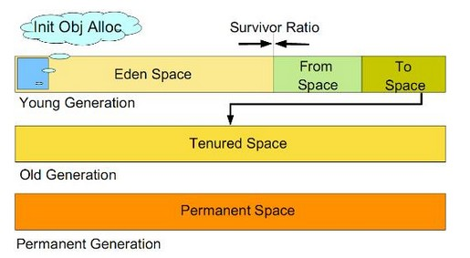
- 新生代。新建的对象都是用新生代分配内存，Eden空间不足的时候，会把存活的对象转移到Survivor中，新生代大小可以由-Xmn来控制，也可以用-XX:SurvivorRatio来控制Eden和Survivor的比例
- 旧生代。用于存放新生代中经过多次垃圾回收仍然存活的对象
- 持久带（Permanent Space）实现方法区，主要存放所有已加载的类信息，方法信息，常量池等等。可通过-XX:PermSize和-XX:MaxPermSize来指定持久带初始化值和最大值。Permanent Space并不等同于方法区，只不过是Hotspot JVM用Permanent Space来实现方法区而已，有些虚拟机没有Permanent Space而用其他机制来实现方法区。 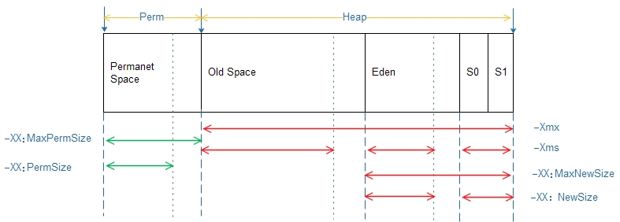
- -Xmx:最大堆内存,如：-Xmx512m
- -Xms:初始时堆内存,如：-Xms256m
- -XX:MaxNewSize:最大年轻区内存
- -XX:NewSize:初始时年轻区内存.通常为 Xmx 的 1/3 或 1/4。新生代 = Eden + 2 个 Survivor 空间。实际可用空间为 = Eden + 1 个 Survivor，即 90%
- -XX:MaxPermSize:最大持久带内存
- -XX:PermSize:初始时持久带内存
- -XX:+PrintGCDetails。打印 GC 信息
- -XX:NewRatio 新生代与老年代的比例，如 –XX:NewRatio=2，则新生代占整个堆空间的1/3，老年代占2/3
- -XX:SurvivorRatio 新生代中 Eden 与 Survivor 的比值。默认值为 8。即 Eden 占新生代空间的 8/10，另外两个 Survivor 各占 1/10
2）栈
每个线程执行每个方法的时候都会在栈中申请一个栈帧，每个栈帧包括局部变量区和操作数栈，用于存放此次方法调用过程中的临时变量、参数和中间结果。
-xss:设置每个线程的堆栈大小. JDK1.5+ 每个线程堆栈大小为 1M，一般来说如果栈不是很深的话， 1M 是绝对够用了的。
3）本地方法栈
用于支持native方法的执行，存储了每个native方法调用的状态
4）方法区
存放了要加载的类信息、静态变量、final类型的常量、属性和方法信息。JVM用持久代（Permanet Generation）来存放方法区，可通过-XX:PermSize和-XX:MaxPermSize来指定最小值和最大值
垃圾回收按照基本回收策略分
引用计数（Reference Counting）:
比较古老的回收算法。原理是此对象有一个引用，即增加一个计数，删除一个引用则减少一个计数。垃圾回收时，只用收集计数为0的对象。此算法最致命的是无法处理循环引用的问题。
标记-清除（Mark-Sweep）:
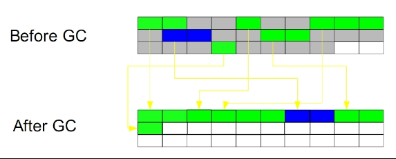 此算法执行分两阶段。第一阶段从引用根节点开始标记所有被引用的对象，第二阶段遍历整个堆，把未标记的对象清除。此算法需要暂停整个应用，同时，会产生内存碎片。
复制（Copying）:
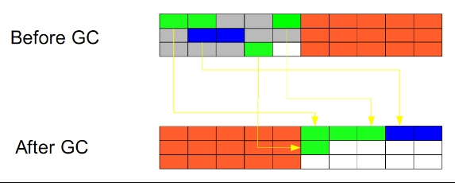 此算法把内存空间划为两个相等的区域，每次只使用其中一个区域。垃圾回收时，遍历当前使用区域，把正在使用中的对象复制到另外一个区域中。算法每次只处理正在使用中的对象，因此复制成本比较小，同时复制过去以后还能进行相应的内存整理，不会出现“碎片”问题。当然，此算法的缺点也是很明显的，就是需要两倍内存空间。
标记-整理（Mark-Compact）:
此算法结合了“标记-清除”和“复制”两个算法的优点。也是分两阶段，第一阶段从根节点开始标记所有被引用对象，第二阶段遍历整个堆，把清除未标记对象并且把存活对象“压缩”到堆的其中一块，按顺序排放。此算法避免了“标记-清除”的碎片问题，同时也避免了“复制”算法的空间问题。
JVM分别对新生代和旧生代采用不同的垃圾回收机制
新生代的GC：
新生代通常存活时间较短，因此基于Copying算法来进行回收，所谓Copying算法就是扫描出存活的对象，并复制到一块新的完全未使用的空间中，对应于新生代，就是在Eden和From Space或To Space之间copy。新生代采用空闲指针的方式来控制GC触发，指针保持最后一个分配的对象在新生代区间的位置，当有新的对象要分配内存时，用于检查空间是否足够，不够就触发GC。当连续分配对象时，对象会逐渐从eden到survivor，最后到旧生代。
在执行机制上JVM提供了串行GC（Serial GC）、并行回收GC（Parallel Scavenge）和并行GC（ParNew）
1）串行GC
在整个扫描和复制过程采用单线程的方式来进行，适用于单CPU、新生代空间较小及对暂停时间要求不是非常高的应用上，是client级别默认的GC方式，可以通过-XX:+UseSerialGC来强制指定
2）并行回收GC
在整个扫描和复制过程采用多线程的方式来进行，适用于多CPU、对暂停时间要求较短的应用上，是server级别默认采用的GC方式，可用-XX:+UseParallelGC来强制指定，用-XX:ParallelGCThreads=4来指定线程数
3）并行GC
与旧生代的并发GC配合使用
旧生代的GC：
旧生代与新生代不同，对象存活的时间比较长，比较稳定，因此采用标记（Mark）算法来进行回收，所谓标记就是扫描出存活的对象，然后再进行回收未被标记的对象，回收后对用空出的空间要么进行合并，要么标记出来便于下次进行分配，总之就是要减少内存碎片带来的效率损耗。在执行机制上JVM提供了串行GC（Serial MSC）、并行GC（parallel MSC）和并发GC（CMS），具体算法细节还有待进一步深入研究。
以上各种GC机制是需要组合使用的，指定方式由下表所示：
| 指定方式 | 新生代GC方式 | 旧生代GC方式 |
| -XX:+UseSerialGC | 串行GC | 串行GC |
| -XX:+UseParallelGC | 并行回收GC | 并行GC |
| -XX:+UseConeMarkSweepGC | 并行GC | 并发GC |
| -XX:+UseParNewGC | 并行GC | 串行GC |
| -XX:+UseParallelOldGC | 并行回收GC | 并行GC |
| -XX:+ UseConeMarkSweepGC -XX:+UseParNewGC |
串行GC | 并发GC |
| 不支持的组合 | 1、-XX:+UseParNewGC -XX:+UseParallelOldGC 2、-XX:+UseParNewGC -XX:+UseSerialGC |
|
四、JVM内存调优
首先需要注意的是在对JVM内存调优的时候不能只看操作系统级别Java进程所占用的内存，这个数值不能准确的反应堆内存的真实占用情况，因为GC过后这个值是不会变化的，因此内存调优的时候要更多地使用JDK提供的内存查看工具，比如JConsole和Java VisualVM。
对JVM内存的系统级的调优主要的目的是减少GC的频率和Full GC的次数，过多的GC和Full GC是会占用很多的系统资源（主要是CPU），影响系统的吞吐量。特别要关注Full GC，因为它会对整个堆进行整理，导致Full GC一般由于以下几种情况：
旧生代空间不足
调优时尽量让对象在新生代GC时被回收、让对象在新生代多存活一段时间和不要创建过大的对象及数组避免直接在旧生代创建对象
Pemanet Generation空间不足
- 增大Perm Gen空间，避免太多静态对象
- 统计得到的GC后晋升到旧生代的平均大小大于旧生代剩余空间
- 控制好新生代和旧生代的比例
System.gc()被显示调用
- 垃圾回收不要手动触发，尽量依靠JVM自身的机制
调优手段主要是通过控制堆内存的各个部分的比例和GC策略来实现，下面来看看各部分比例不良设置会导致什么后果
1）新生代设置过小
- 一是新生代GC次数非常频繁，增大系统消耗；
- 二是导致大对象直接进入旧生代，占据了旧生代剩余空间，诱发Full GC
2）新生代设置过大
- 一是新生代设置过大会导致旧生代过小（堆总量一定），从而诱发Full GC；二是新生代GC耗时大幅度增加
- 一般说来新生代占整个堆1/3比较合适
3）Survivor设置过小
- 导致对象从eden直接到达旧生代，降低了在新生代的存活时间
4）Survivor设置过大
- 导致eden过小，增加了GC频率
- 另外，通过-XX:MaxTenuringThreshold=n来控制新生代存活时间，尽量让对象在新生代被回收
由内存管理和垃圾回收可知新生代和旧生代都有多种GC策略和组合搭配，选择这些策略对于我们这些开发人员是个难题，JVM提供两种较为简单的GC策略的设置方式
1）吞吐量优先
JVM以吞吐量为指标，自行选择相应的GC策略及控制新生代与旧生代的大小比例，来达到吞吐量指标。这个值可由-XX:GCTimeRatio=n来设置
2）暂停时间优先
JVM以暂停时间为指标，自行选择相应的GC策略及控制新生代与旧生代的大小比例，尽量保证每次GC造成的应用停止时间都在指定的数值范围内完成。这个值可由-XX:MaxGCPauseRatio=n来设置
最后汇总一下JVM常见配置
堆设置
- -Xms:初始堆大小
- -Xmx:最大堆大小
- -XX:NewSize=n:设置年轻代大小
- -XX:NewRatio=n:设置年轻代和年老代的比值。如:为3，表示年轻代与年老代比值为1：3，年轻代占整个年轻代年老代和的1/4
- -XX:SurvivorRatio=n:年轻代中Eden区与两个Survivor区的比值。注意Survivor区有两个。如：3，表示Eden：Survivor=3：2，一个Survivor区占整个年轻代的1/5
- -XX:MaxPermSize=n:设置持久代大小
收集器设置
- -XX:+UseSerialGC:设置串行收集器
- -XX:+UseParallelGC:设置并行收集器
- -XX:+UseParalledlOldGC:设置并行年老代收集器
- -XX:+UseConcMarkSweepGC:设置并发收集器
垃圾回收统计信息
- -XX:+PrintGC
- -XX:+PrintGCDetails
- -XX:+PrintGCTimeStamps
- -Xloggc:filename
并行收集器设置
- -XX:ParallelGCThreads=n:设置并行收集器收集时使用的CPU数。并行收集线程数。
- -XX:MaxGCPauseMillis=n:设置并行收集最大暂停时间
- -XX:GCTimeRatio=n:设置垃圾回收时间占程序运行时间的百分比。公式为1/(1+n)
并发收集器设置
- -XX:+CMSIncrementalMode:设置为增量模式。适用于单CPU情况。
- -XX:ParallelGCThreads=n:设置并发收集器年轻代收集方式为并行收集时，使用的CPU数。并行收集线程数。